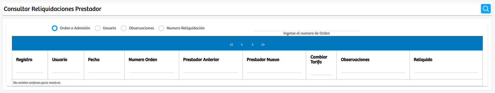
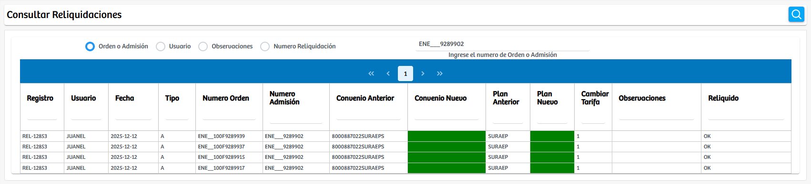
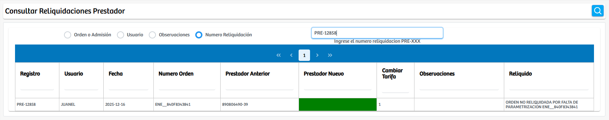

Modulos Sas-Web
Funcionalidades
Consultar Reliquidaciones Prestador
El módulo Consultar Reliquidaciones Prestador permite al usuario acceder a un visor especializado para consultar todas las reliquidaciones realizadas sobre prestadores dentro del sistema. Al ingresar al módulo, se presenta un conjunto de opciones de filtrado que definen el criterio de búsqueda que se utilizará. El usuario puede seleccionar entre cuatro parámetros disponibles: Orden o Admisión, Usuario, Observaciones o Número de Reliquidación. Una vez elegido el criterio, el sistema habilita un campo de texto para capturar el dato correspondiente, ya sea el número de orden o admisión, el identificador del usuario, una palabra clave relacionada con las observaciones o el número de reliquidación estructurado bajo el formato PRE-XXX.
Cuando se ingresa el valor y se presiona el botón de búsqueda, el módulo consulta la información almacenada y muestra únicamente los registros que coinciden con los parámetros suministrados. Los resultados se reflejan en una tabla dinámica donde se visualizan los datos relevantes de cada reliquidación, como el número de registro, el usuario que ejecutó el proceso, la fecha, el número de orden, los prestadores anterior y nuevo, las modificaciones aplicadas en tarifas, las observaciones asociadas y el estado final de la reliquidación. Esta interfaz facilita la trazabilidad y el análisis de las modificaciones ejecutadas sobre órdenes asociadas a prestadores, permitiendo validar la correcta ejecución de los procesos y realizar auditorías internas cuando sea necesario.
El funcionamiento del módulo está orientado a consolidar la información de manera clara y precisa, de modo que el usuario pueda identificar rápidamente el historial y el detalle de cada reliquidación sin necesidad de acceder a múltiples pantallas. Además, la estructura del visor permite navegar entre páginas de resultados cuando la consulta arroja un número elevado de registros. Con esta herramienta se centraliza la revisión y supervisión de los cambios ejecutados en las reliquidaciones asociadas a prestadores, manteniendo un control adecuado sobre la operación y garantizando transparencia en los procesos internos.
